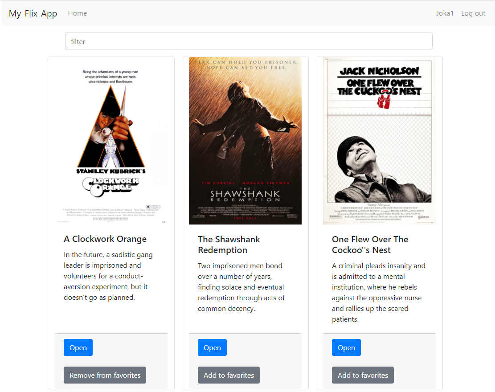
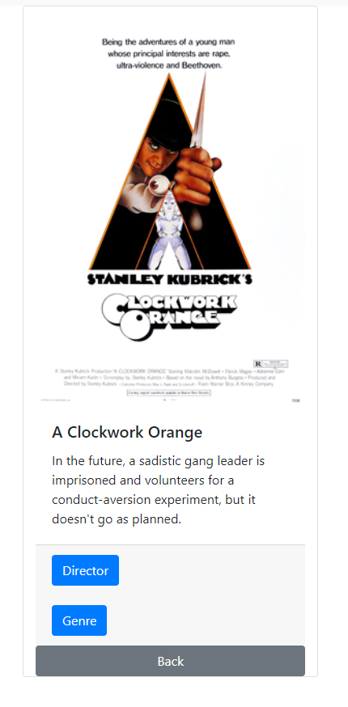
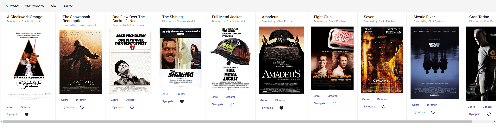
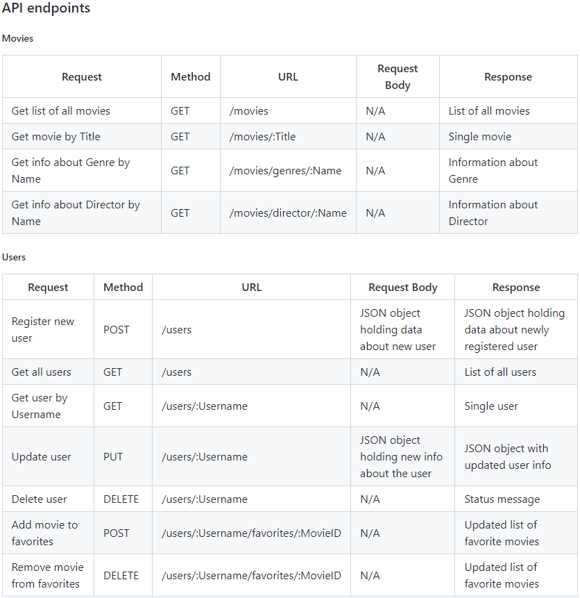
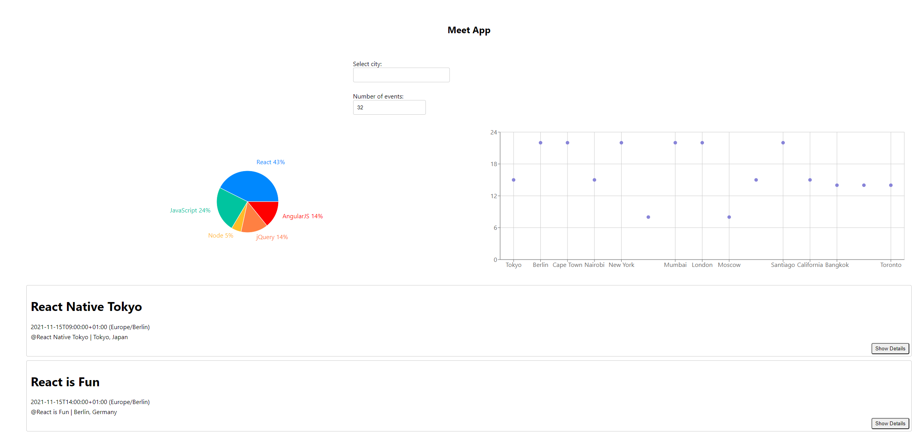
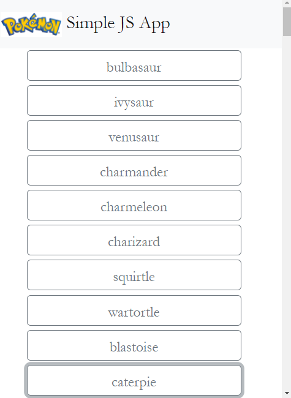
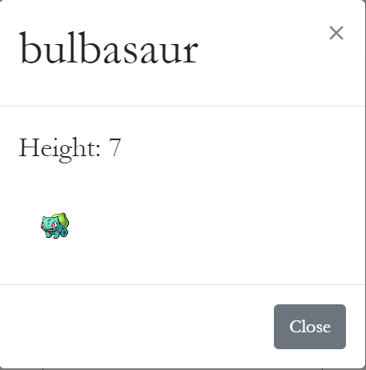

This is a client-side for a one page application called myFlix.
It includes several interface views built using the React library that handle data through the
previously-defined REST API (Movie API) endpoints. The app uses Bootstrap as a UI library for styling and
responsiveness.


This project is the client-side for an application called myFlix based on
its existing server-side code (Movie API and database), with supporting
documentation.
It is bulid using Angular, popular frontend framework.

This project is a server-side component of a “myFlix” movies web application. The API is a Node.js and
Express
application. Backed by MongoDB it provides information about the movies like Title, Genre, Director and
Description, and information about the users like Name and Favorite Movies.

This is a chat app for mobile devices developed by using React Native and Expo. The app provides
users with a chat
interface and options to share images and their location. The chat interface and functionality are created
using the Gifted Chat library.
Meet is a progressive web application (PWA) with React using a test-driven development (TDD) technique. The
app provides a list of Calendar events fetched from the Google Calendar API. The application uses AWS Lambda
serverless
functions and works both online and offline.

Within this project, I was reProject is based on building simple JS App for listing Pokemons and option to
see more details for each item on the list.
External API was used for loading data as well as HTML, CSS, and JavaScript framework Bootstrap.

